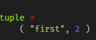
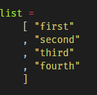
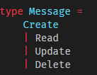
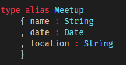
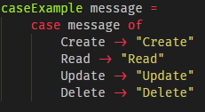
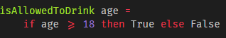
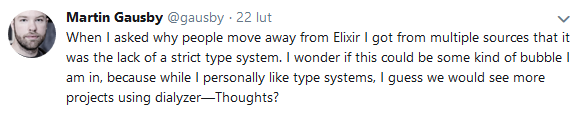

Short romance with Elm
Bit about myself
Bit about elm
Syntax


Syntax - cont


Case

If statements

Types!

Thank you & questions
Lukasz Skotarek
@dreat_ on Twitter
dreat on Elixir/3cityIt Slack
mail: contact@dreat.info